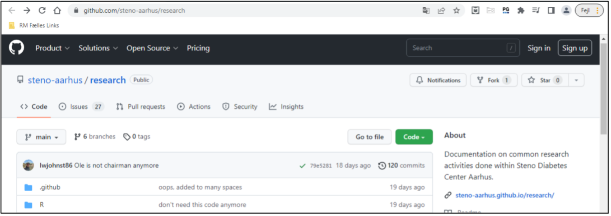
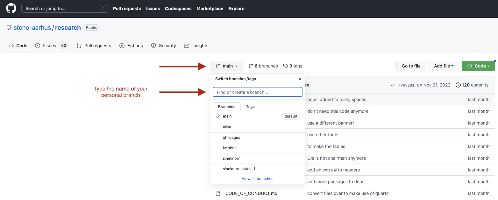
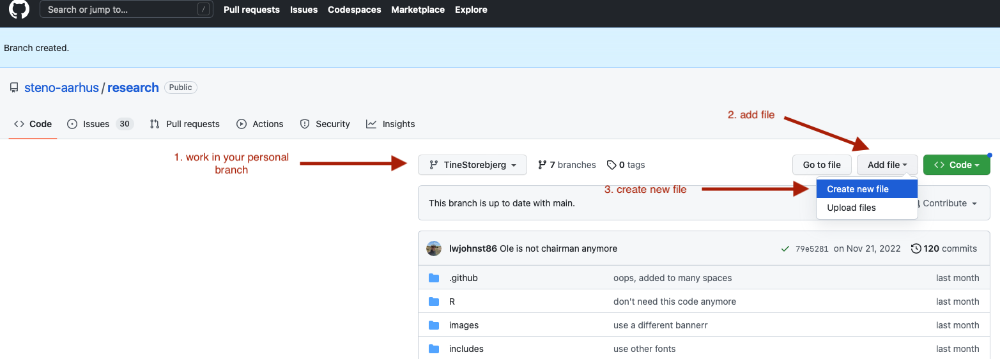
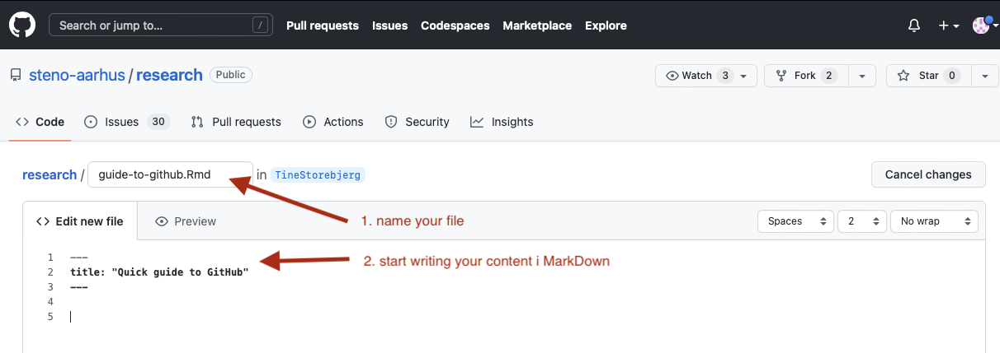
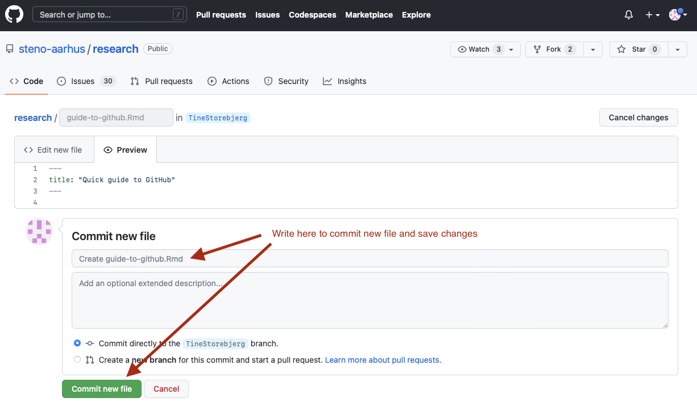
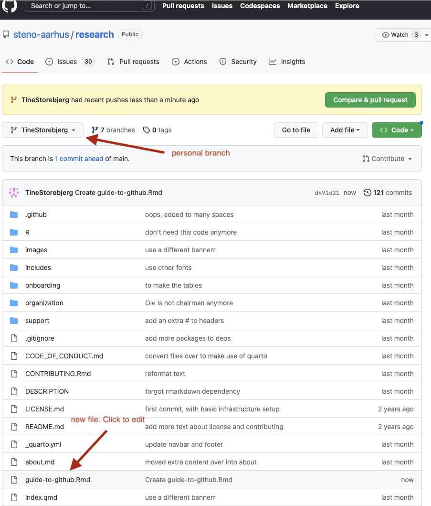
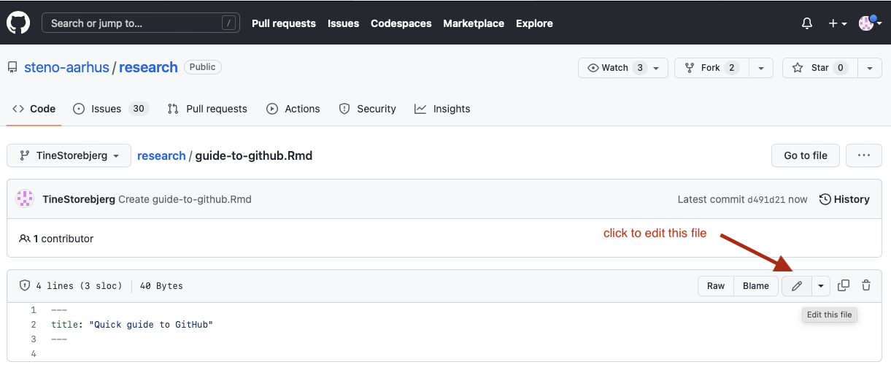
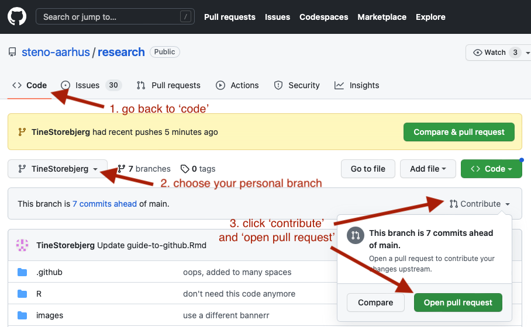
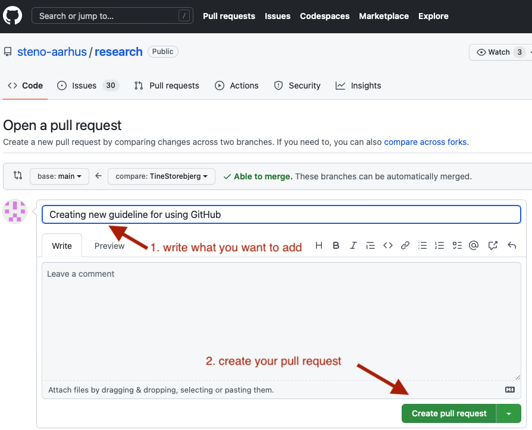

Quick guide to using GitHub
In SDCA Research we use GitHub for common docs and support. This is a quick guide to write your first (or second) content and contribute to the community. Please be aware that everything on GitHub is open access, so don’t add anything private or confidential.
First time logging in
Sign up for a GitHub account if you don’t have one already.
Go to the SDCA Research GitHub repository.

SDCA GitHub main page. Send your username to administrator Luke Johnston so he can add you as a team member.
You’ll receive an invitation mail. Join @steno-aarhus through the link (expires in 7 days)
Watch tutorial videos
How to contribute?
- Create a new (personal) branch1 to work in, since you can’t directly edit the files in the “main” branch. (You need to be added as a teammember to complete this step)
1 A branch is a bit like a “copy” of the files in the “main” branch. After you edit the files in the “copy” (branch), you can request your changes get included into the main branch.

- If you want to add a new file, rather than modify and existing one, go to “Create new file”:

- Give your file a name, for instance
guide-to-github.md(only small characters and use-for spaces). Use.mdas the file extension, which stands for “Markdown”.

Start writing your content in Markdown. You can find support on how to write using Markdown in the tutorials or in GitHub’s guide on Markdown.
In order to save your changes you’ve made, you need to ‘commit’2 this new file to the Git history and eventually on to the website. At the bottom of the page is a text box to write a message. Please write a short message describing why you are adding the files or making the changes.
2 “Commit” means to save something to the history, like you “commit” something to your memory.

- Now you can find your file in the research folder on your personal branch. You can continue writing either on this file or others by clicking the ‘Edit’ button of the file.


- Once you are finished with what you want to add or modify, the next step is to get the content on the website. To do that, you’ll need to make a “pull request”3 so that your content gets merged into the main branch. Go to ‘Code’, choose your personal branch, click ‘Contribute’ and ‘Open pull request’.
3 A pull request is a process of taking your branch and requesting that it get merged into the main branch. It also allows for people to comment on your changes before they get merged.

- Once you’ve selected to make a pull request of your branch, you need to write a title describing what you are adding or changing and why. Then you can click ‘Create pull request.’. The administrator will look at the pull request and if necessary, add some edits before adding it to the main branch/webpage. Everyone can comment with suggestion for change.

And that’s the basics!